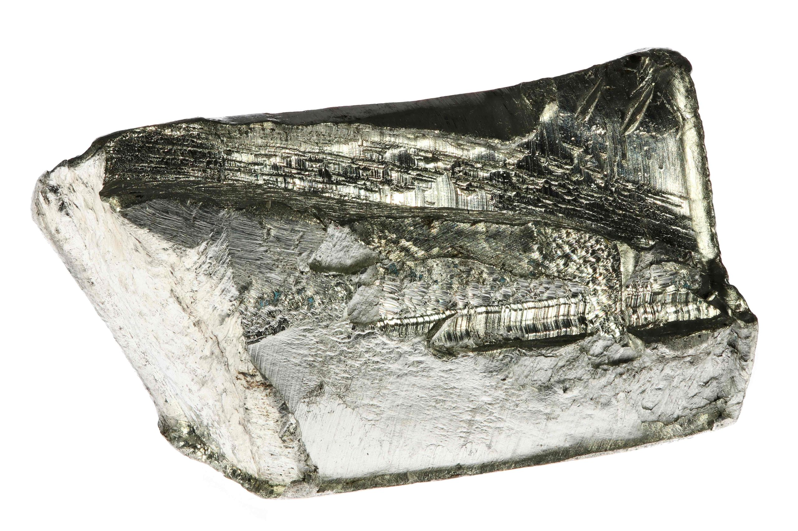

Nome elemento: Stagno
Massa atomica: 118.69 g/mol
Numero atomico: 50
Numero di isotopi: 20
Numero di massa degli isotopi: 120; 118; 116 (dei più diffusi in natura)
Temperatura di fusione: 232 °
Temperatura di ebollizione: 2270 °C
Densità: 7,30 g/cm3
Elettronegatività: 1,8
Anno di scoperta: 1800 a.C.
Abbondanza: 2 ppm (parti per milione)
Caratteristiche
E’ un metallo lucente di colore bianco-argenteo con sfumature bluastre. Molto tenero e malleabile, in presenza di umidità si forma un sottile strato di ossido che lo protegge da ulteriore corrosione, motivo per cui è resistente all’aria. Spesso forma composti, tra i quali si trovano il biossido di stagno (SnO2), utilizzato nell’industria della ceramica, del vetro e nella fabbricazione di materiali refrattari e lo stannato sodico Na2[Sn(OH)6], usato nelle operazioni di stagnatura e nell’industria tessile come mordente e anticombustibile del cotone.
Applicazioni tecnologiche
Le saldature in stagno sono molto utilizzate nella produzione elettronica, dove servono a collegare le componenti sui circuiti stampati. Nei cellulari lo stagno è presente sotto forma di ossido insieme a quello di indio e vengono impiegati nella pellicola trasparente che conduce elettricità all’interno dello schermo, al quale consente di funzionare come touch screen. Inoltre, essendo malleabile e resistente alla corrosione, viene largamente utilizzato per proteggere l’acciaio o il ferro, prolungando la vita dei contenitori e dei materiali da imballaggio. Questa caratteristica è fondamentale nell’industria alimentare, dove i contenitori rivestiti in stagno preservano la freschezza dei prodotti. Questo elemento svolge un ruolo importante anche nell’industria chimica, in cui i suoi composti servono come catalizzatori in varie reazioni.
Localizzazione giacimenti
Lo stagno viene estratto in 35 paesi tra cui Spagna, Inghilterra, Boemia, Cina, Perù, Bolivia e Australia, ma metà dei giacimenti si trova nel sud-est asiatico.
Effetti sulla salute e sull'ambiente
L’essere umano può assorbire piccole quantità di stagno attraverso l’alimentazione, la respirazione e la pelle. Gli effetti che può causare sono sia acuti che a lungo termine. I primi sono mal di testa, mal di pancia, malessere e stordimento, forte sudorazione, assenza di respiro e roblemi alle vie urinarie, mentre i secondi sono depressione, danni al fegato, malfunzionamento del sistema immunitario, danno ai cromosomi, scarsità di globuli rossi e danni al cervello. Nell’ambente lo stagno può diffondersi attraverso i sistemi idrici una volta assorbito dalle particelle di fango, tramite cui causa moltissimi danni agli ecosistemi acquatici, poiché sono molto tossiche per i funghi, le alghe ed il fitoplancton e quindi per tutti gli organismi animali presenti.
